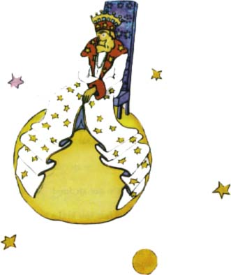

Na prvním bydlel král. Obleèen v purpur a hermelín, sedìl na velmi prostém, a pøece majestátním trùnì.

"Ale hleïme, poddaný," zvolal král, kdy¾ uvidìl malého prince.
A malý princ se ptal sám sebe: Jak mì mù¾e znát, kdy¾ mì je¹tì nikdy nevidìl?
Nevìdìl, ¾e králové vidí svìt velice zjednodu¹en. V¹ichni lidé jsou pro nì poddaní.
"Pojï blí¾, a» tì lépe vidím," øekl mu král a byl moc py¹ný, ¾e koneènì nìkomu kraluje.
Malý princ se díval, kam si sednout, ale planeta byla celá zaplnìna nádherným hermelínovým plá¹tìm. Zùstal tedy stát, a proto¾e byl unaven, zívl.
"Zívat v pøítomnosti krále se neslu¹í," øekl mu mocnáø. "Zakazuji ti to."
"Nemohu se udr¾et," odpovìdìl malý princ celý zmatený. "Byl jsem dlouho na cestì a nespal jsem..."
"Naøizuji ti tedy, abys zíval," øekl král. "Ji¾ léta jsem nevidìl nikoho zívat. Je to pro mne nìco nového. Tak jen zívej dál. Naøizuji ti to."
"Teï se bojím... u¾ nemohu...," odpovìdìl malý princ a po u¹i se zaèervenal.
"Hm, hm," odpovìdìl král. "Tak... tak ti naøizuji chvílemi zívat a chvílemi..."
Trochu breptal a zdál se pohnìván.
Králi toti¾ ¹lo o to, aby se uznávala jeho autorita. Nestrpìl neposlu¹nost. Byl to absolutistický mocnáø. Ale byl také velký dobrák, a proto dával rozkazy rozumné.
"Kdybych naøídil," øíkal obvykle, "kdybych naøídil generálovi, aby se promìnil v moøského ptáka, a on neuposlechl, nebyla by to vina generálova, ale moje."
"Mohu se posadit?" zeptal se nesmìle malý princ.
"Naøizuji ti, aby ses posadil," odpovìdìl král a pøitáhl si majestátnì cíp svého hermelínového plá¹tì.
Malý princ ¾asl. Planeta byla malièká. Nad èímpak mohl tak vládnout?
"Ve¹e Velièenstvo," pravil, "prosím o prominutí, ¾e se vás ptám..."
"Naøizuji ti, aby ses mì ptal," øekl honem král.
"Va¹e Velièenstvo, èemu vládnete?"
"V¹emu," odpovìdìl král velmi prostì.
"V¹emu?"
Král rozvá¾nì ukázal na svou planetu, na ostatní planety a na hvìzdy.
"Tomu v¹emu?"
"Ano, tomu v¹emu," odpovìdìl král.
Byl to toti¾ vladaø nejen absolutistický, ale i v¹evládnoucí.
"A hvìzdy vás poslouchají?"
"Ov¹em," øekl mu král. "Uposlechnou ihned. Nesnesu nekázeò."
Taková moc malého prince oslnila. Kdyby on ji mìl, vidìl by ne ètyøiatøicet, ale dvaasedmdesát nebo sto, nebo dokonce dvì stì západù slunce v tý¾ den, ani¾ by musel posunout ¾idli! A ponìvad¾ mu bylo trochu smutno pøi pomy¹lení na jeho malou, opu¹tìnou planetu, dodal si odvahy a po¾ádal krále o laskavost:
"Chtìl bych vidìt západ slunce... Udìlejte mi tu radost... Naøiïte slunci, aby zapadlo..."
"Kdybych naøídil generálovi, aby létal od kvìtiny ke kvìtinì, jako létá motýl, nebo aby psal tragédii nebo aby se promìnil v moøského ptáka, a generál by rozkaz neprovedl, èí by to byla chyba?"
"Va¹e," odpovìdìl pevnì malý princ.
"Správnì. Je tøeba ¾ádat od ka¾dého to, co mù¾e dát," odvìtil král. "Autorita závisí pøedev¹ím na rozumu. Poruèí¹-li svému lidu, aby ¹el a vrhl se do moøe, vzbouøí se. Mám právo vy¾adovat poslu¹nost, proto¾e mé rozkazy jsou rozumné."
"A co ten mùj západ slunce," pøipomnìl mu malý princ, který nikdy nezapomínal na otázku, kdy¾ ji jednou dal.
"Bude¹ mít ten svùj západ slunce. Vy¾ádám si ho. Ale ponìvad¾ umím vládnout, poèkám, a¾ k tomu budou pøíznivé podmínky."
"A kdy to bude?" otázal se malý princ.
"Hm, hm!" odpovìdìl král a podíval se nejprve do tlustého kalendáøe. "Hm, hm, bude to... bude to dnes veèer asi ve tøi ètvrti na sedm. A uvidí¹, jak jsou mé rozkazy pøesnì plnìny."
Malý princ zívl.
Litoval, ¾e pøi¹el o západ slunce. A také u¾ se trochu nudil.
"Nemám tady u¾ co dìlat," øekl králi. "Zase pùjdu!"
"Neodcházej," zvolal král. Byl pøece tak hrdý, ¾e má poddaného. "Neodcházej, jmenuji tì ministrem!"
"A èeho?"
"Ministrem... ministrem spravedlnosti!"
"Ale v¾dy» není koho soudit!"
"To se neví," podotkl král. "Je¹tì jsem nevykonal objí¾ïku po svém království. Jsem u¾ hodnì starý, nemám místo pro koèár a chùze mì unavuje."
"Ó! Ale já jsem u¾ v¹echno vidìl," øekl malý princ a nahnul se, aby se je¹tì jednou podíval na druhou stranu planety.
"Tam na druhé stranì také nikdo není..."
"Bude¹ tedy soudit sám sebe," odpovìdìl král. "To je to nejtì¾¹í. Je mnohem nesnadnìj¹í soudit sám sebe ne¾ nìkoho jiného. Jestli¾e se ti to podaøí sám sebe dobøe soudit, bude to znamenat, ¾e jsi opravdu mudrc."
"Jen¾e soudit sebe mohu kdekoliv. Na to nemusím bydlet tady."
"Hm, hm!" odvìtil král. "Myslím, ¾e na mé planetì je nìkde stará krysa. Sly¹ím ji v¾dy v noci. Mù¾e¹ soudit tu starou krysu. Obèas ji odsoudí¹ na smrt. Tak bude její ¾ivot záviset na tvé spravedlnosti. Ale udìlí¹ ji poka¾dé milost, abys ji u¹etøil. Je to jenom jedna."
"Já nemám rád, kdy¾ se odsuzuje na smrt," odpovìdìl malý princ, "a opravdu myslím, ¾e odejdu."
"Ne," øekl král.
Ale malý princ dokonèil pøípravy a nechtìl u¾ starého vladaøe trápit:
"Kdyby si va¹e výsost pøála, aby se jí pøesnì uposlechlo, mohla by mi dát rozumný rozkaz. Mohla by mi napøíklad naøídit, abych se vzdálil, døíve ne¾ uplyne minuta. Zdá se mi, ¾e podmínky jsou pøíznivé..."
Ponìvad¾ král neodpovídal, malý princ nejprve zaváhal, potom si vzdychl a vydal se na cestu.
"Jmenuji tì svým vyslancem," volal za ním spì¹nì král. Tváøil se velice pánovitì.
Dospìlí jsou hroznì zvlá¹tní, pomyslel si cestou malý princ.